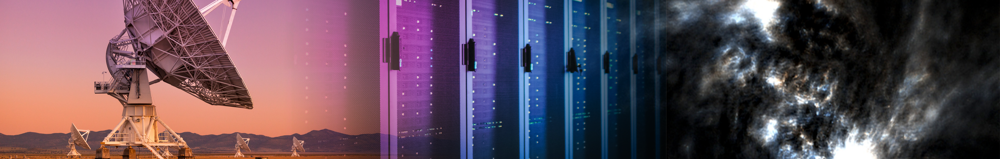

Galactic ASKAP Spectral Line Survey
GASKAP-OH
Constructing a comprehensive picture of the multi-phase nature of the ISM in the Milky Way and Magellanic System.

Galactic ASKAP Spectral Line Survey
Constructing a comprehensive picture of the multi-phase nature of the ISM in the Milky Way and Magellanic System.